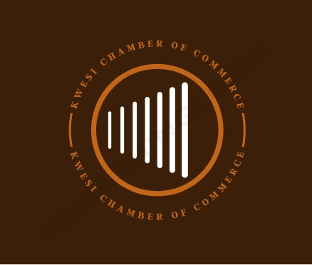

Join us for a Chamber of Commerce meet and greet on Wednesday at 7:00 pm!
Boti Falls is a pair of twin waterfalls situated in Boti, within the Yilo Krobo District in the Eastern Region of Ghana. These remarkable twin falls are known as the "female" and "male" falls due to their origin from two distinct rivers, and local folklore tells of a captivating phenomenon that occurs when these waters combine. It is said that when the waters from these two rivers converge at the base of the falls, they create a breathtaking natural spectacle. Under certain conditions, sunlight passing through the mist created by the cascading waters can produce a mesmerizing rainbow.
The Independence Arch, erected by Ghana's first president, Kwame Nkrumah, in 1961, was specifically constructed to commemorate the visit of Queen Elizabeth II to Accra. This iconic structure holds profound significance as it symbolizes Ghana's hard-fought journey towards liberation from British colonial rule. Furthermore, it stands as a solemn tribute to the brave soldiers who laid down their lives in the pursuit of Ghana's freedom.
The Jamestown Lighthouse can be found in the Jamestown district of Accra, Ghana. This impressive structure, standing at a height of 28 meters (92 feet), was initially constructed in the 1930s, replacing a previous lighthouse that had been established in 1871. It comprises a sturdy stone tower housing a lantern and gallery, connected to a keeper's residence.
The Umbrella Rock is a prominent rock formation situated within the vicinity of Boti Falls in the Yilo Krobo District of Ghana. It stands as one of the primary points of interest for tourists in the Eastern Region of the country. True to its name, the Umbrella Rock features an extensive overhang at the top, providing ample shelter for a group of 12 to 15 people simultaneously.
The purpose of constructing the National Theatre was to lead the theatrical initiative in Ghana and to furnish a versatile venue suitable for a wide range of activities. This includes concerts, dance performances, theatrical plays, musical shows, film screenings, exhibitions, and various special events. The design of the National Theatre was intended to cater to people of diverse ages and backgrounds, making it an inclusive and accommodating space for all.
Mount Afadja, referred to as Afadjato by the Ewe community in Ghana and Togo, stands as one of the loftiest peaks in the nation. Its summit is situated within the Volta Region, near the boundary shared with Togo, in proximity to the localities of Liati Wote and Gbledi Gbogame, located within the Afadjato South District and Hohoe Municipality, respectively.